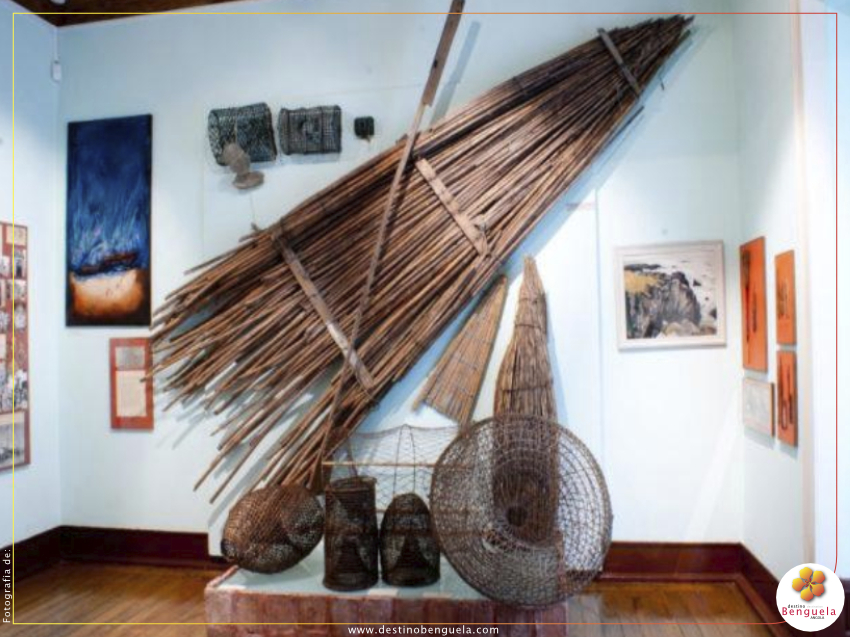

Localizado no Lobito, província de Benguela, é o retrato fiel da diversidade etno cultural dos povos de Angola e disso é prova o seu riquíssimo acervo museológico
Possui mais de 1.500 peças, sendo 50% pertencentes ao povo Lunda-Tchokwe
Caracterização:
Tem como data de referência o dia 28 de Outubro de 1969, altura do lançamento do primeiro pilar que acabou por alicerçar aquilo que constitui hoje o museu. Possui no seu acervo mais de 1513 peças museológicas e mais de 50% do seu acervo, representa peças da cultura Lunda Cokwe. Conta com cinco técnicos médios na especialidade de história e geografia, e um técnico superior em geografia.
Surgimento:
Em 1966, um grupo de portugueses amantes de artes e cultura angolana pertencentes a ex-câmara Municipal do Concelho do Lobito, deliberou por unanimidade a compra de um prédio pertença do Banco de Angola pelo preço de 500.000{directory}15{/directory} (quinhentos mil escudos) a pagar por duas prestações iguais, destinado à instalação do Museu do Lobito. Em 1970, foi concluído a última prestação, ficando o edifício, localizado na Restinga, sob plena responsabilidade da Comissão Municipal de Turismo que desenvolvia na cidade, intensas actividades culturais de artes plásticas, filatélicas, numismática, etc; Esta comissão era presidida pelo Engenheiro António Vieira da Silva e o Sr. Osvaldo Leal e apoiada pelo arquitecto Francisco Castro Rodrigues. Com o surgimento do 25 de Abril em Portugal e as grandes transformações que se seguiram nas ex-colônias em África, as sucessivas fugas dos portugueses para Europa, obrigou ao encerramento do museu de 1974 a 1976. O seu acervo, havia sido transferido para a ex-câmara sob custódia do arquitecto Francisco Castro Rodrigues, salvaguardando assim o importante espólio cultural angolano. A 11 Novembro 1978, reabre ao público com a devolução de todo patrimônio cultural sob sua guarda. Desde então o museu continuou com as suas actividades recebendo peças etnológicas de várias partes do país. Os seus trabalhos de pesquisa estão estagnados por falta de recursos técnicos e financeiros.
 Restinga, Lobito, Benguela, AO
Restinga, Lobito, Benguela, AO